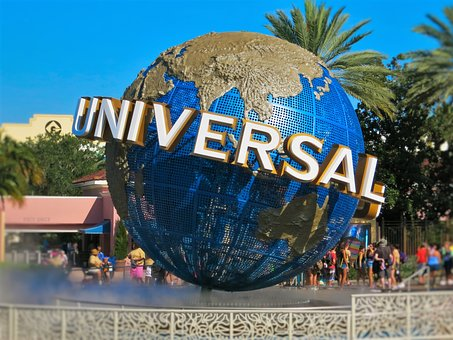
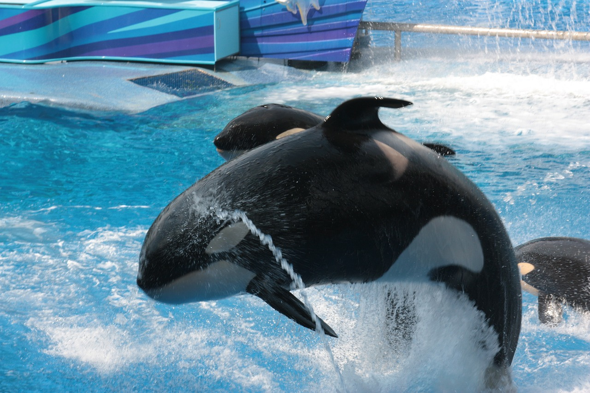
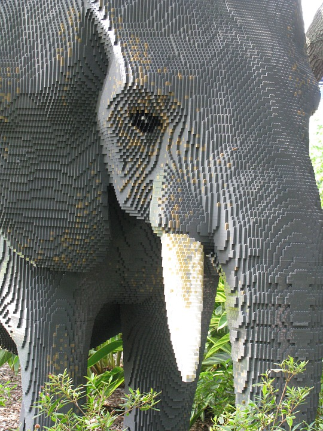

  
Disney
Adults and children from all over the world
come to visit Disney World.Throughout the park, Mickey Mouse
and other disney characters will put on shows for the guests,
making your experience a time to remember.
Universal Studios
Universal Studios is great for 3d experiences.
They have many rides that are interactive and show you around themed rides with 3d effects.
THe have a whole section for Harry Potter lovers that include the castle and differnt rides that go along with the movies.
For adults or teenagers they have large roler coasters. Aswell as a large water park with many slides and rides for the whole family.
Sea World
Sea world has many shows featuring sea animals. Dolphins are there most popular shows as they do many tricks.
Sea worls isn't just about seeing animals, they have water rides, roller coasters, and other rides for the family too.
Of course there are many exibits that you can see differnt sea animals too.
Lego Land
Lego Land is worth going to. They have many rides, roller costers, a water park, many climbing and
jungle gyms and sculptures all over the park made completly by legos.
For the litte kids, they have an enclosed waiting area within the lines
that the kids can play with legos while waiting to go on the next ride.